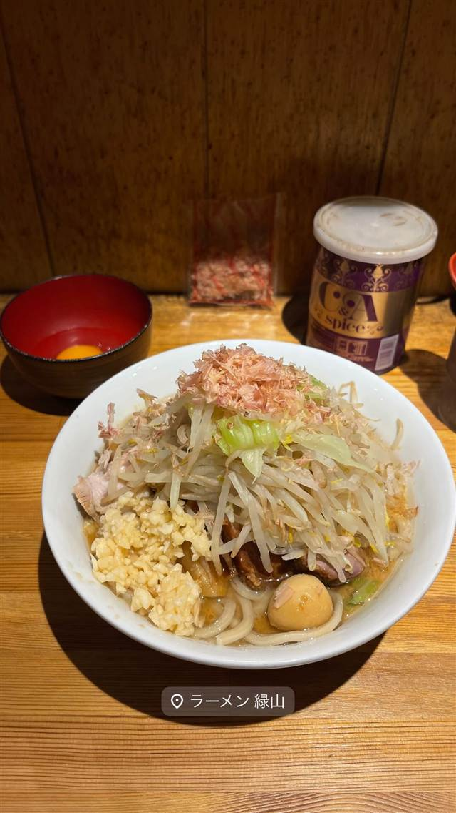

ラーメン · 二郎系(インスパイア) · 西台
ラーメン緑山
蓮爾仕込みの極太麺と「ド乳化」スープの二郎系
ラーメン 緑山
二郎系の名店「蓮爾」出身の店主が2021年に西台で開いたインスパイア系ラーメン店。極太麺と見た目以上にクリーミーな「ド乳化」スープが持ち味で、ヤサイ・ニンニク・アブラのコールにも対応する。店名は明治期の象牙彫刻家・安藤緑山に由来する。
TRIVIA
豆知識
- 店名「緑山」は明治期の象牙彫刻家・安藤緑山にちなむ
- 麺は世田谷、スープは登戸と、修行先「蓮爾」の2店舗の味をそれぞれ再現している
REVIEWS
世間の評判
90.1ラーメンDB
ほうとう級極太麺とロットの波
- ほうとうを思わせる極太麺とエビ風味のスープが特徴という声がある
- 値上げとともに麺やチャーシューの質が落ちたと感じる声も見られる
- 麺のロットによって出来にばらつきがあるという指摘も複数見られる
ラーメンデータベース 口コミ45件・最新 2026-06
| 創業 | 2021年7月25日開業 |
|---|---|
| 系譜 | 二郎系の名店「蓮爾（はすみ）」出身の店主が独立。新町一丁目店・登戸店の蓮爾で修行し、麺は世田谷（新町一丁目）、スープは登戸の味をそれぞれ意識 |
| 看板 | 二郎インスパイア系ラーメン（エビラーメンなど） |
| こだわり | 極太麺と見た目は「ド乳化」だが意外とクドくないクリーミーなスープが特徴。ヤサイ・ニンニク・アブラのコールに対応、もやしとキャベツの比率は7:3 |
| どこから | 23区の外れ・近郊 |
| 営業時間 | 月 休み 火・水 11:00-14:00、17:00-20:00 木 休み 金〜日 11:00-14:00、17:00-20:00 |
| 予算 | 昼 ¥1,000～¥1,999 夜 ¥1,000～¥1,999 |
| 定休日 | 月・木 |
| 場所 | 西台 東京都板橋区西台2-39-5 |
| メモ | ヤサイマシ・ニンニク・アブラなどのコール制。訪問時間帯によっては並ばず入れることもある |
食べたもの：二郎系ラーメン